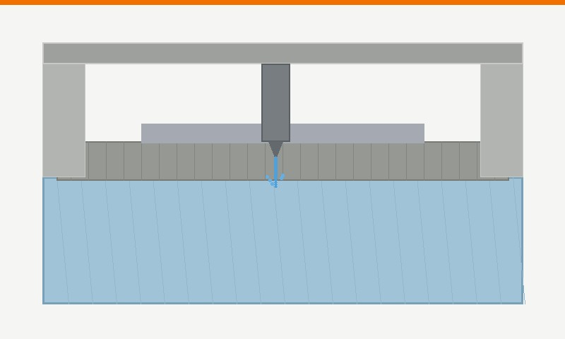

Sistemi di taglio waterjet robotizzati con braccio industriale per il taglio ad acqua ad alta pressione su metalli e profilati, anche su superfici complesse in 3D, senza alterazioni termiche.

Nel waterjet un getto d'acqua ad altissima pressione, miscelato con abrasivo, taglia il materiale senza scaldarlo.
| Macchina | Indicata per |
|---|---|
| Nessun calore | Il materiale non subisce deformazioni termiche e non si forma la zona termicamente alterata |
| Con abrasivo | L'abrasivo aggiunto al getto permette di tagliare i metalli |
| Robotizzato 3D | Con il braccio industriale si possono tagliare anche superfici complesse in 3D |
Per confrontarlo con le tecnologie di taglio termico, vedi anche taglio laser, plasma e ossitaglio.
Ciro Benedetto si occupa della commercializzazione e rappresentanza di macchine utensili per la carpenteria metallica e la lavorazione dei metalli, selezionate tra aziende italiane e internazionali con consolidata esperienza. Le richieste vengono seguite direttamente, in sinergia con i fornitori, garantendo al cliente acquisti alle migliori condizioni.
È la parte di materiale vicino al taglio che, con le tecnologie di taglio termico, si scalda e può cambiare caratteristiche. Con il waterjet il taglio avviene senza calore, quindi questa zona non si forma.
Sì, i sistemi waterjet robotizzati con braccio industriale permettono il taglio anche su superfici complesse in 3D.
Quando il materiale non deve subire alterazioni termiche. Ogni richiesta parte dalla valutazione delle necessità produttive, per individuare la tecnologia più adatta.
Per una consulenza tecnica personalizzata e senza impegno, contattami direttamente. Lun – Ven: 8:30 – 18:30.